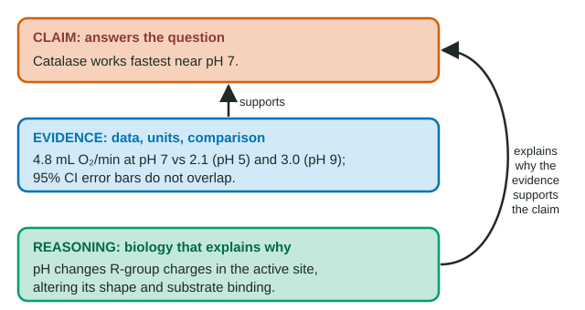

The shape of a "justify" answer
Free-response questions keep asking you to "support your claim with evidence", "justify" or "explain how the data support". All of them want the same three-part argument: a claim that answers the question, evidence from the data, and reasoning that uses biology to explain why the evidence supports the claim. Students who know the biology still lose points by leaving out one part, usually the reasoning, or by blurring evidence and reasoning together.
Worked example: catalase and pH

Catalase speeds the breakdown of hydrogen peroxide into water and oxygen gas. Students added potato extract to hydrogen peroxide at five pH values and measured oxygen released per minute (means of five trials, ± 95% confidence intervals): pH 3, 0.4 ± 0.2; pH 5, 2.1 ± 0.3; pH 7, 4.8 ± 0.4; pH 9, 3.0 ± 0.4; pH 11, 0.6 ± 0.3 mL/min.
Question: How does pH affect potato catalase? Support your answer.
Claim: Potato catalase works fastest near pH 7, and its activity falls as pH moves away from 7 in either direction.
Evidence: The mean rate at pH 7 was 4.8 mL O₂/min, compared with 2.1 at pH 5 and 3.0 at pH 9, and its 95% confidence interval (4.4-5.2) does not overlap either neighbor's. At pH 3 and 11 the rates fell to 0.4 and 0.6 mL/min.
Reasoning: pH changes the charges on R groups in and near the active site. Away from the enzyme's optimum, the altered charges disrupt the ionic and hydrogen bonds that hold the active site's shape and affect how well it binds hydrogen peroxide, so fewer enzyme-substrate complexes form per minute.
Limitation: pH was tested only every 2 units, so the true optimum could be anywhere from about 6 to 8.
What each part needs
| Part | What it is | Strong | Weak |
|---|---|---|---|
| Claim | One sentence answering the question | "Catalase works fastest near pH 7." | "pH matters." (too vague to test) |
| Evidence | Data: values, units, comparison | "4.8 mL/min at pH 7 vs 2.1 at pH 5 and 3.0 at pH 9, non-overlapping CIs" | "The bars are different heights." |
| Reasoning | Biology explaining why | "pH alters R-group charges, changing the active site's shape and binding." | "It was highest at pH 7 because 4.8 is the biggest number." |
The weak reasoning in the last row is circular: it restates the evidence. Reasoning must bring in something the data do not contain, a mechanism.
A second argument: what kind of inhibitor?
A team measured an enzyme's initial rate at rising substrate concentrations, with and without compound X. Without X: 3.3, 5.0, 7.1, 8.3, 9.1, 9.5 µmol/min at 1, 2, 5, 10, 20 and 40 mM. With X: 1.4, 2.5, 4.5, 6.3, 7.7, 8.7.
- Claim: X is a competitive inhibitor.
- Evidence: at 1 mM substrate X cuts the rate by about 58% (3.3 to 1.4); at 40 mM by only about 8% (9.5 to 8.7). The inhibited curve is approaching the same maximum.
- Reasoning: a competitive inhibitor binds the active site reversibly. The more substrate there is, the more often substrate rather than X occupies the site, so X's effect shrinks. A noncompetitive inhibitor binds elsewhere, changes the enzyme's shape and lowers the maximum rate however much substrate is added.
- Limitation and next step: the X curve is still rising at 40 mM; measuring at 80 and 160 mM would show whether it reaches the uninhibited maximum.
Keep the claim within the evidence
An enzyme's rate is 5.1 ± 0.6 µmol/min at 30 °C and 5.4 ± 0.7 at 35 °C (95% CI). The intervals overlap, so the justified claim is "the data do not show a difference", not "it works faster at 35 °C". Two temperatures cannot locate an optimum either. A claim that goes beyond the data loses the point even when the reasoning is good.
Limitations and sources of error
- A source of error is a problem in how measurements were made: different students starting the timer at different moments, a water bath warmer than its setting, bubbles misread.
- A limitation is a boundary on what the conclusion can cover: one potato variety, pH spaced 2 units apart, five trials per group.
Naming a limitation and saying how to address it (more pH values between 6 and 8; more trials) shows a grader that your claim is careful, not that it is weak.